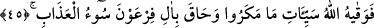

içtikten sonra, dinlenmek üzere oraya uzandı. Atlı da o sırada kesesini düşürdüğünü
anlamış ve pınarın başına gelmişti. Fakat keseyi göremedi. Fakiri tutup keseyi sordu.
Yanında olmadığını görünce nereye sakladığını öğrenmek için işkence etmeye başladı.
Sonunda adamcağızı öldürünceye kadar dövdü. Bu durumu gören peygamber: “Yâ İlâhî!
Keseyi bu adam almadı ki… Bir başka zâlim aldı. Sen ise bu zâlimi o zavallıya
musallat ettin, o da adamcağızı öldürdü!?” deyince, Cenâb-ı Hak kendisine şöyle
vahyetti: “Sen ibâdet etmene bak. Sen bu gibi durumların sırrını anlayacak vaziyette
değilsin. O gördüğün fakir, atlının babasını öldürmüştü. Ben de atlıya babasının öcünü
alma kısas; yâni imkânı verdim. Ancak yine atlının babası, daha önce keseyi alan o
adamın bin dinarını almış olduğu için, bıraktığı malın bin dinarını o adama geri vermiş
oldum.” Bu olayı Gazzali (r.h.) anlatır.
Hâfız der ki:
Akla, yol olmayan bir yerde neden zayıf re’ye istinad ederler?
Niçin olmayacak abes tedbirde bulunmaya kalkışırlar?
45. Nihayet Allah, onların kurdukları tuzakların kötülüklerinden bu zatı korudu,
Firavun’un kavmini ise kötü azap kuşatıverdi.
“Nihayet Allah, onların kurdukları tuzakların kötülüklerinden,” yâni kumpaslarının
vereceği sıkıntılardan ve kendilerine karşı gelenleri duçar etmeye karar verdikleri envâi
çeşit işkenceden, kendi yolunda endişelendikleri kötülüklerden “bu zatı korudu,”
muhâfaza etti.
Şöyle rivâyet edilir: Firavun Harbil’in öldürülmesini emredince o kaçıp bir dağa
yöneldi. Namazla meşgul oldu. Hak Teâlâ yırtıcı hayvanlardan oluşan bir orduyu
sevketti. Etrafında bekçilik yapmaya başladılar. Tefvizin neticesi hemencecik ona ulaştı.
Yani, o işini Allah’a havâle etti, Allah da ona kâfi geldi.
Keşfü’l-esrâr’da şöyle nakledilir: Firavun kendi yakınlarından bir topluluğu onun
peşine gönderdi. Ona ulaştıklarında onun namaz kıldığını ve yırtıcı hayvanların bekçilik
yaptığını gördüler. Korktular, Firavun’un yanına gelip durumu aktardılar. Firavun, söz
ortada yayılmasın diye hepsini öldürdü.
Bazı müfessirler de şöyle der: Bunların bir kısmını yırtıcı hayvanlar yemiştir. Bir
kısmı da Firavun’a geri dönmüş, ancak o bunları itham ederek astırmıştır. İşte Cenab-ı
Hak: “Nihayet Allah onu korudu” ifadesiyle Harbîl’in durumunu haber vermektedir.
Harbîl’in, Hz. Mûsâ ile birlikte kurtulduğu da söylenmiştir.
“Firavun’un kavmini” yâni Firavun’u ve kavmini “ise kötü azap” yâni boğulma ki
bu sadece dünyalık azabdır, “kuşatıverdi.” Bu azap, onların başına iniverdi. Burada